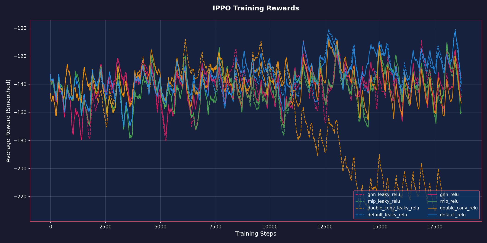
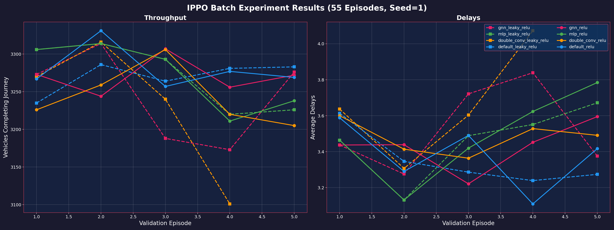
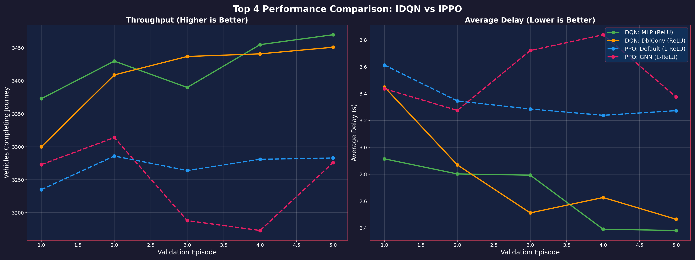

Date: Feb 15, 2026
Agent: IPPO (Independent Proximal Policy Optimization)
Environment: BB5B (Malaysia Map)
Experiment Group: PPO Batch (55 Episodes)
This report analyzes the performance of the Independent PPO (IPPO) agent across four neural network architectures and two activation functions. We compare these results directly against the previously benchmarked IDQN agent to evaluate the efficacy of policy gradient methods versus value-based methods in this traffic control scenario.
The IPPO agent uses an Actor-Critic architecture where each intersection independently learns a policy $\pi(a|s)$ and a value function $V(s)$.
Tested with ReLU and Leaky ReLU activations: 1. Default: Shallow CNN (1 Conv + 2 FC). 2. Double Conv: Deeper CNN (2 Conv + 2 FC). 3. MLP (v2): Deep Fully Connected (5 layers, 256 units, LayerNorm). 4. GNN (v2): Multi-Head Attention (4 heads, Residuals, LayerNorm).
Workspace: sathyakumar/Tensorcell-test Neptune Dashboard | Seed=1
| Run ID | Net | Activation |
|---|---|---|
| TEN-91 | default | relu |
| TEN-92 | double_conv | relu |
| TEN-93 | mlp | relu |
| TEN-94 | gnn | relu |
| TEN-95 | default | leaky_relu |
| TEN-96 | double_conv | leaky_relu |
| TEN-97 | mlp | leaky_relu |
| TEN-98 | gnn | leaky_relu |
Average rewards (INFMain, PBB, SIRIM) smoothed over training steps.

Observation: PPO training is significantly more volatile than IDQN. mlp_leaky_relu and gnn_leaky_relu show the most consistent improvement, while ReLU variants appear more unstable or stagnant in later stages.

| Model Combination | Throughput (Veh) | Delay Index (TTI)* |
|---|---|---|
| Default (CNN) + Leaky ReLU | 3283 | 3.27 |
| GNN + Leaky ReLU | 3276 | 3.38 |
| Double Conv + Leaky ReLU* | 3101 | 4.07 |
| MLP + Leaky ReLU | 3226 | 3.67 |
| Default + Relu | 3269 | 3.42 |
| MLP + ReLU | 3238 | 3.78 |
*Note: Delay Index (Travel Time Index) = Average Ratio of Actual Travel Time to Free Flow Time. Lower is better. A value of 3.27 means travel takes ~3.3x the ideal time. This metric was previously labeled "Avg Delay (s)" but inspection confirmed it is a ratio.
For consistent comparison with IDQN and IMA2C, we report the average performance across all 55 training episodes: - Throughput: ~3341 Veh/Episode - Delay Index (TTI): ~4.09 - Note: IPPO shows high variance, and training averages reflect the exploration noise.

Comparing the best configurations from both agents:
| Metric | Best IDQN (MLP+ReLU) | Best IPPO (Default+LeakyReLU) | Difference |
|---|---|---|---|
| Throughput | 3470 | 3283 | IDQN +5.7% |
| Delay Index | 2.38 | 3.27 | IDQN -27.2% |
Hypothesis: My working hypothesis is that the GNN and deeper MLP architectures introduced too much complexity for the PPO agent to handle efficiently within 55 episodes. Since PPO generally has higher variance than DQN, trying to learn complex graph dependencies (attention weights) while simultaneously optimizing the policy likely made the landscape too difficult to navigate. The agent might have gotten stuck in local optima because it couldn't stabilize the representation learning and the policy updates at the same time. However, this is just my interpretation of the results; it's quite possible that with more extensive hyperparameter tuning or a different initialization strategy, these advanced models could perform much better.